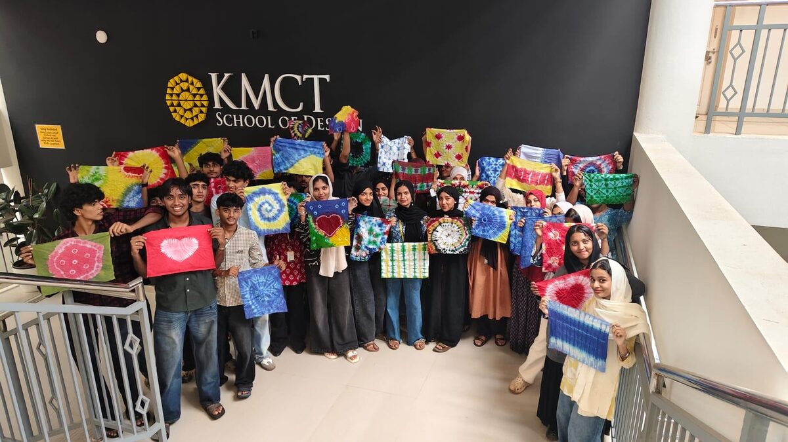

01
Tie-dye workshop · KMCT School of Design · 2025
Tangled in Tints
A hands-on workshop on creating textile patterns using trend research and colour exploration, encouraging students to experiment with visual compositions and develop their own pattern language. I ran it twice: once for Foundation students and again as part of the Joy of Design event. What I enjoyed most was watching simple ideas and colour inspirations turn into unique, experimental patterns.
Where and who
KMCT School of DesignFoundation studentsJoy of Design event
What it covers
Trend researchColour explorationPattern makingExperimentation
